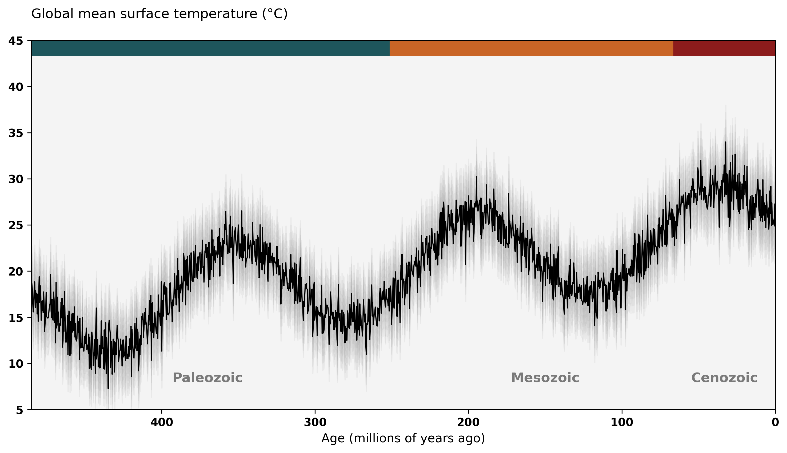
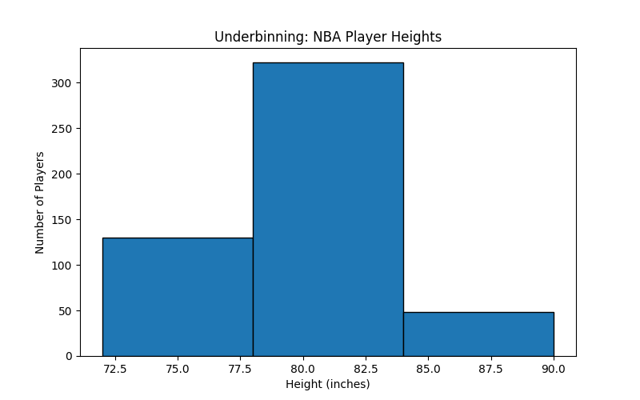
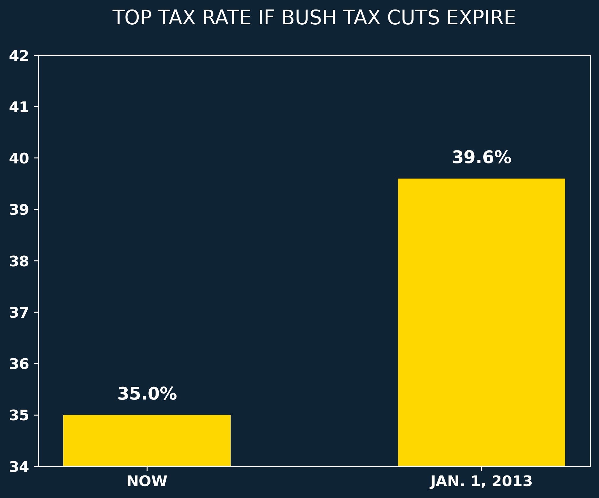
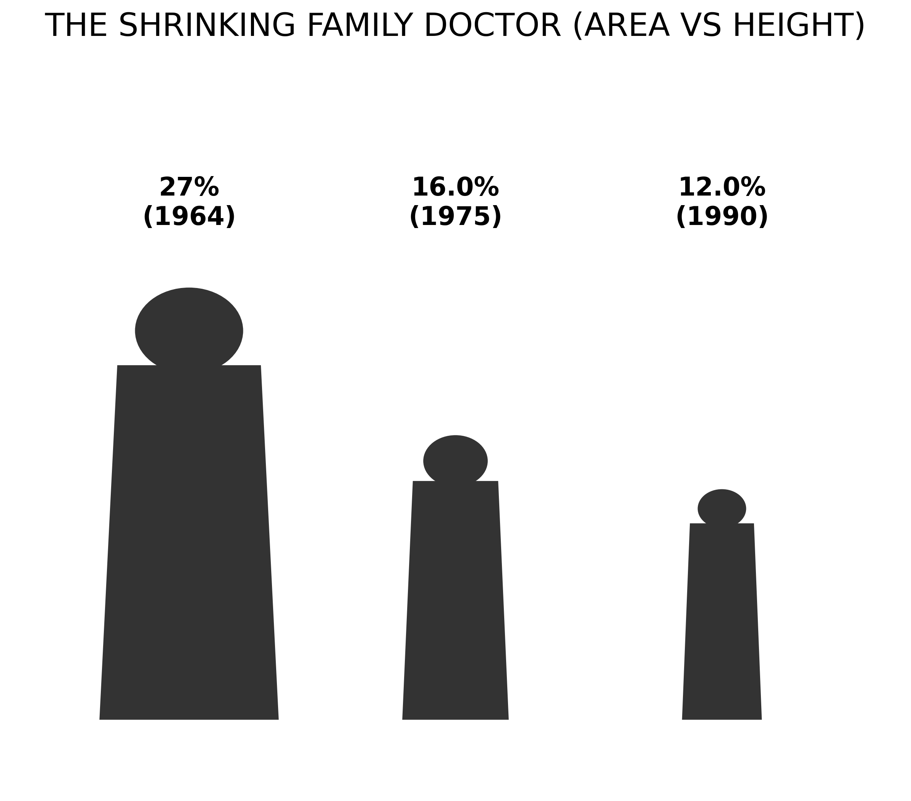
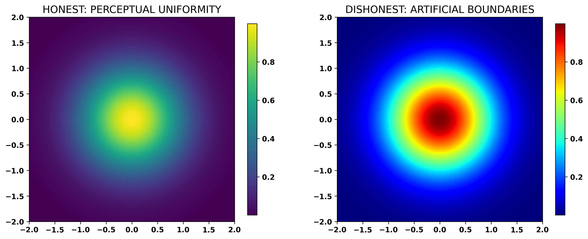
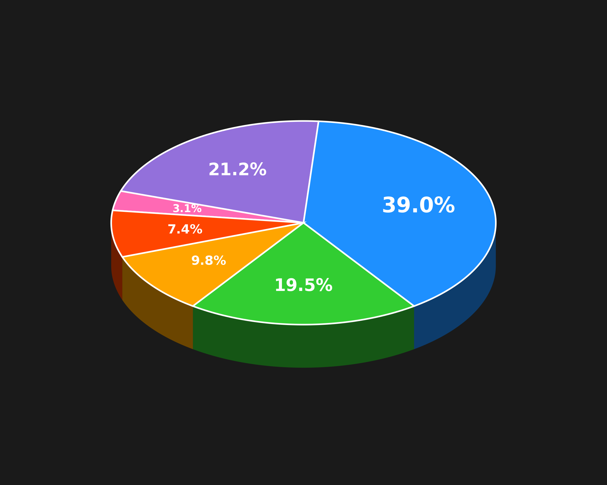

22 Apr 2026
Information Visualisation SS 2026
Copyright 2026 by the author(s), except as otherwise noted.
This work is placed under a Creative Commons Attribution 4.0 International (CC BY 4.0) licence.

Chart recreated from original in Python by the authors.
Reducing the number of bins obscures the
true distribution, hiding important clusters.

Chart recreated from original in Python by the authors.

Chart recreated from original in Python by the authors.

Chart recreated from original in Python by the authors.

Chart recreated from original in Python by the authors.

Chart recreated from original in Python by the authors.